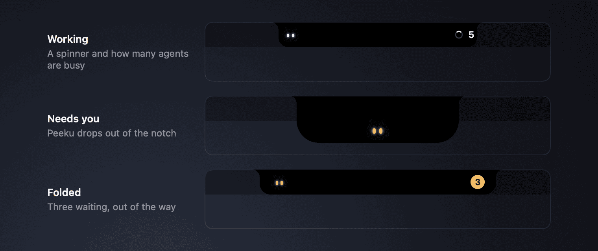
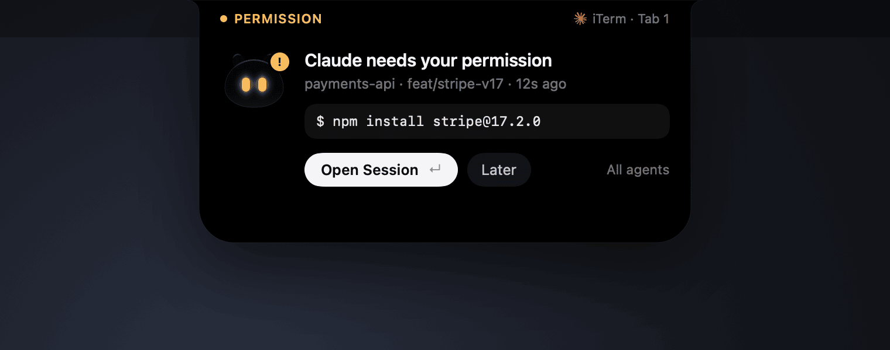
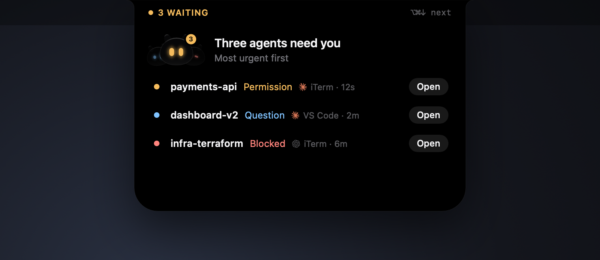
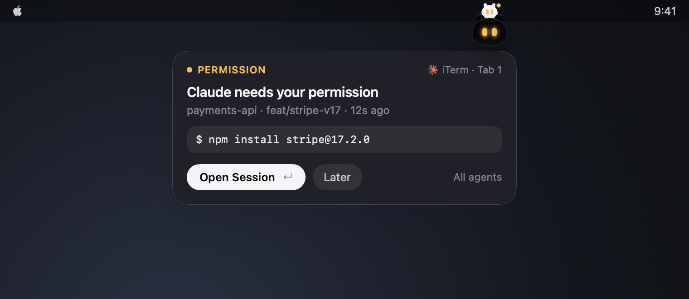
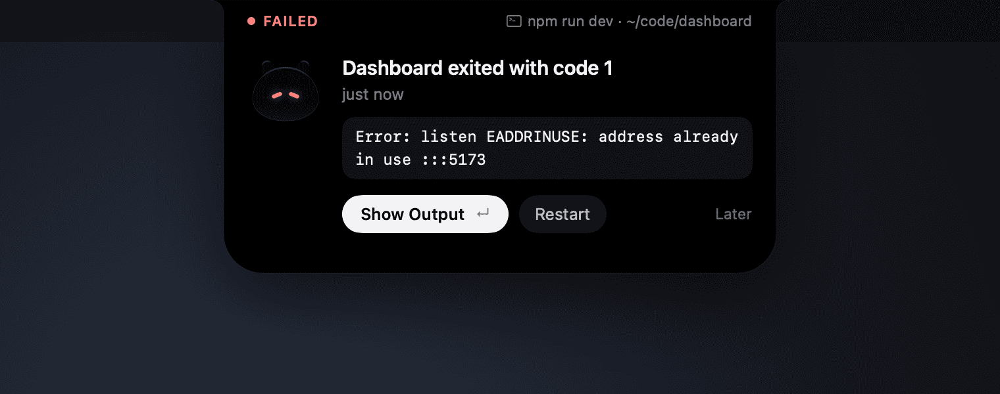
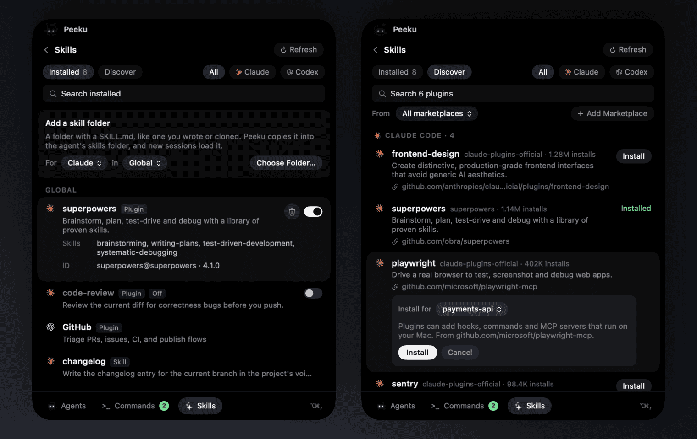
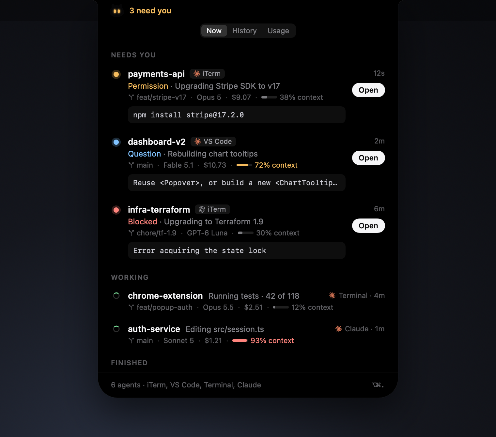
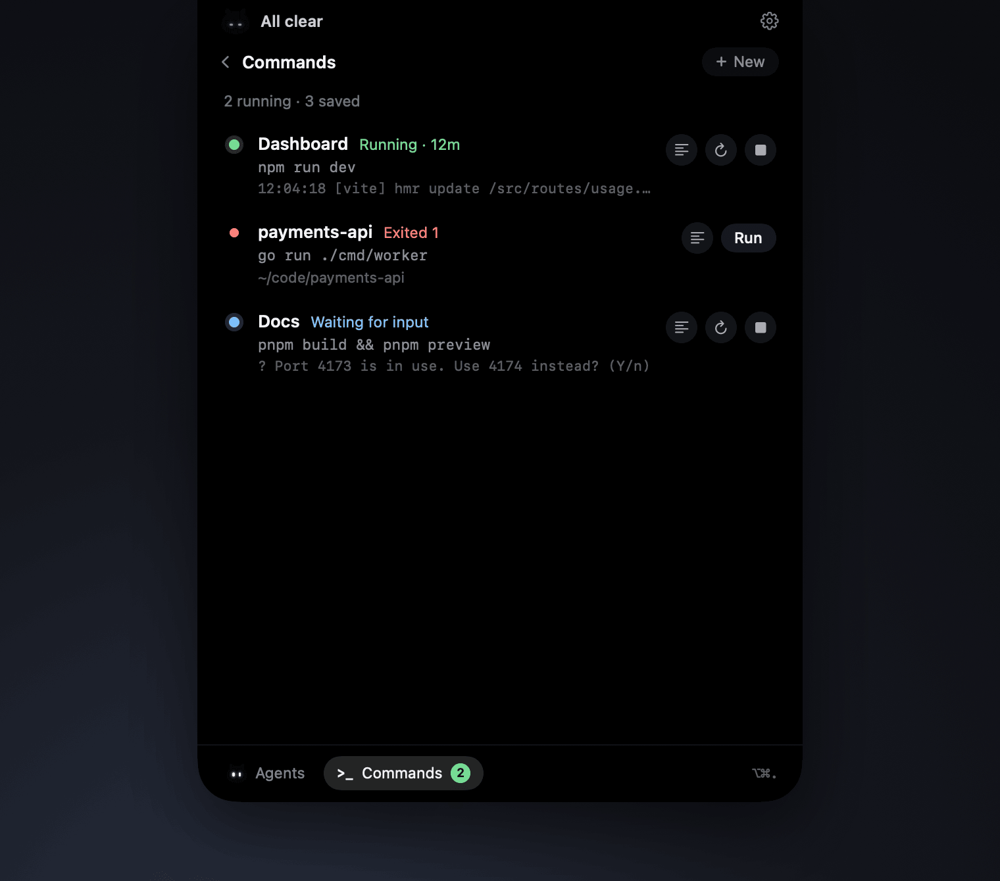
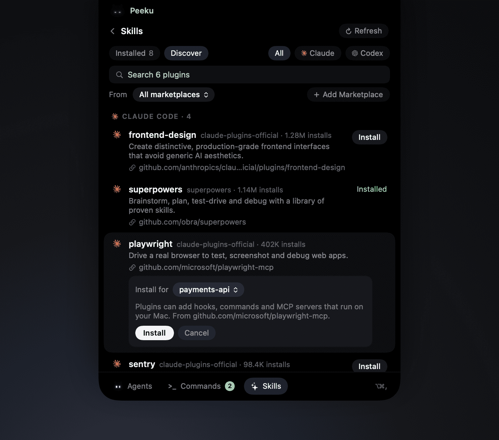

You start a few Claude Code or Codex sessions in iTerm, Terminal and VS Code, switch to something else, and one of them quietly stops to ask for permission. Ten minutes later you notice.
Peeku fixes that. It sits invisibly inside the notch, or in its own menu bar icon, while your agents work. When one needs you, Peeku drops out, a notification opens, and Open Session takes you straight to the exact terminal tab or editor window. Then Peeku tucks itself away again.
Invisible until it isn't.
Idle, Peeku is invisible: the notch is just the notch. While agents work, two eyes glance around beside the camera. When something needs you, Peeku drops out.

The exact command, question or error.
Permission requests show the exact command, questions show their choices, errors show the error, and finished runs show the agent's last reply.

Straight to the right tab.
Opens the precise iTerm tab, Terminal tab or VS Code window, and outlines it with a brief focus ring. Several agents waiting become one list, most urgent first.

No notch? It lives in the menu bar.
On an external display or an older MacBook, Peeku lives in its own menu bar icon and climbs down from it when an agent needs you. Prefer it there on a MacBook too? Pick Menu Bar in Settings.

Your dev server, one shortcut away.
Save the commands you run all day, like npm run dev, with their folder. Run, restart and stop them from the dock at the bottom of the session manager, or press ⌥⌘. to open them. When one exits with an error, Peeku tells you with its last line of output.

Every skill your agents load, in one place.
See every plugin and skill Claude Code and Codex load, globally and per project. Browse their marketplaces, install for everything or just one project, and turn plugins off without uninstalling. Press ⌥⌘/.

And the little things.
The whole app, one click away.
Click the notch or the menu bar icon: every session up top, your dev commands and skills in the dock below.



State lives in the eyes.
Sleepy, busy, curious, eager, worried and happy.
Read-only by design. Everything stays on your Mac.
The collector only records. It never answers, approves or blocks anything, prints nothing, and always exits immediately, so it can't slow your agent down or change what it does. The only network request Peeku makes is its update check to GitHub.
~/.claude/sessions~/.claude/settings.json~/.codex/hooks.json~/.codex/sessions~/.claude/skills · ~/.agents/skillsStays out of the way.
Unanswered alerts fold into a small pill. In full screen Peeku shrinks to a thin glow, and it goes quiet while Zoom shares your screen or when you ask it to. Peeku never takes the keyboard from your editor on its own, and every shortcut can be changed in Settings.
- Show or hide your agents
- ⌥⌘,
- Open Now, History or Usage
- ⌥⌘, 1–3
- Show or hide Commands
- ⌥⌘.
- Show or hide Skills
- ⌥⌘/
- Move to the next waiting agent
- ⌥⌘↓
- Open the highlighted session
- ↵
- Fold the alert, or go back to your agents
- Esc
- Open a row by number
- ⌘1–9
Get Peeku.
Free and open source. Requires macOS 14 Sonoma or later and Claude Code in a terminal, VS Code or the Claude app. Codex CLI is optional. Works with or without a notch.
- 1Download Peeku-x.y.z.zip from the latest release and unzip it.
- 2Move Peeku.app to your Applications folder.
- 3Open Peeku, and let macOS open it once.
- 4Follow the short setup. It finds where your agents run and connects to Claude Code and Codex.
xattr -dr com.apple.quarantine /Applications/Peeku.app
git clone https://github.com/ahrefabhi/peeku.git cd peeku swift run Peeku --demo